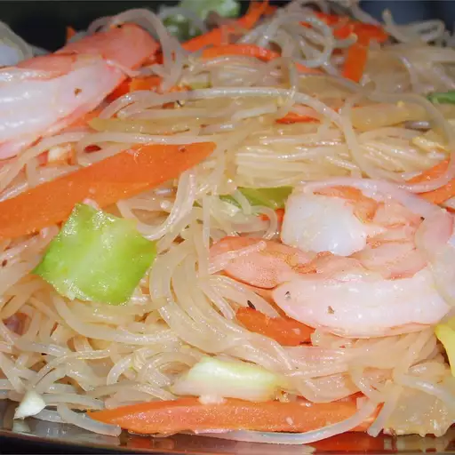

Pancit Bihon

Ingredients
- 1 (8 ounce) package thin rice noodles
- ½ pound skinless, boneless chicken legs, cut into bite-size pieces
- ½ pound pork tenderloin, cut into bite-size
- ½ cup soy sauce
- ground black pepper, to taste
- ½ medium head cabbage, shredded
- 2 carrots, shredded
- 2 green onions, chopped into 1-inch pieces
- ½ pound shrimp, peeled and deveined
Directions Step by Step
- Place rice noodles in a large bowl and cover with warm water. When soft, cut into 4-inch lengths. Drain and set aside.
- In a skillet over medium heat, brown chicken and pork until no pink shows. Season with soy sauce and pepper. Remove from skillet and set aside. Sauté cabbage and carrots until tender. Stir in noodles, green onions, and shrimp. Cook for 4 to 5 minutes, stir in chicken and pork, and cook for 5 more minutes.
For more infor/source:Click here